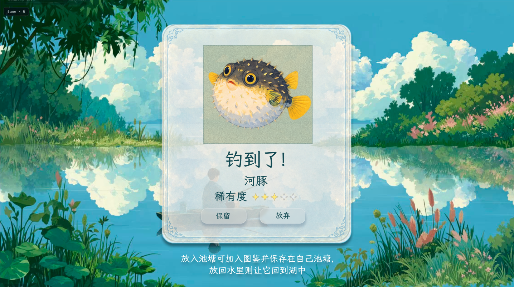

Little
Elsewhere别境
给专注一片风景，
给日常一点别处。
Leave the noise on shore.
A little time, a quiet lake, a place of your own.
开发中 / In development
{kind=link}
{kind=link}
A LITTLE SPACE, JUST FOR YOU
把注意力留给眼前，
让心绪去往别境。
学习、工作，或是读完手边的一章。留一段时间给正在做的事，让小舟陪你停在湖心。云影、流水，还有一次未知的垂钓收获，组成这一小段属于你的时光。
For work, study, or one more chapter. Give your attention to the task at hand, while a small boat waits on a quiet lake.
01 出发之前 SETTLE IN
这一段时间，
按你的节奏来。
选好时长，写下此刻想完成的小事。再为自己留一点喜欢的声音，就可以出发了。
Choose a duration, set a small intention, and make room for the sounds you enjoy.
- 留出时间 Your time
- 25、45、60 分钟，或自定义一段时长。
- 放下一件心事 Your intention
- 可选的专注目标，让当下要做的事更清晰。
- 听见喜欢的声音 Your atmosphere
- 分别选择背景音乐与环境音效，找到舒服的陪伴。
{kind=link}
{kind=link}
03 带回一点惊喜 DISCOVER
认真度过的时间，
有了小小的回响。
一段专注之后，也许会遇见一位意想不到的湖中来客。把它留在自己的池塘，或让它回到湖里，让每一次相遇都有自己的去处。
A little discovery at the end of a focused moment. Keep your catch in your pond, or let it swim free.

LITTLE BY LITTLE
让点滴收获，
慢慢住进自己的池塘。
垂钓、收集、放入池塘。让每一段投入的时间，留下可以回望的小小痕迹。
Fish, collect, and make a pond your own. A small reminder of the time you have given to what matters.
SEE YOU BY THE LAKE
我们湖心见。
别境正在为移动设备打造，正式上线信息将在这里公布。
Little Elsewhere is in development for mobile.
Release details will be shared here.
本页展示开发中的界面设计，画面与功能以正式发布版本为准。
Design previews of a work in progress. Visuals and features may change before release.